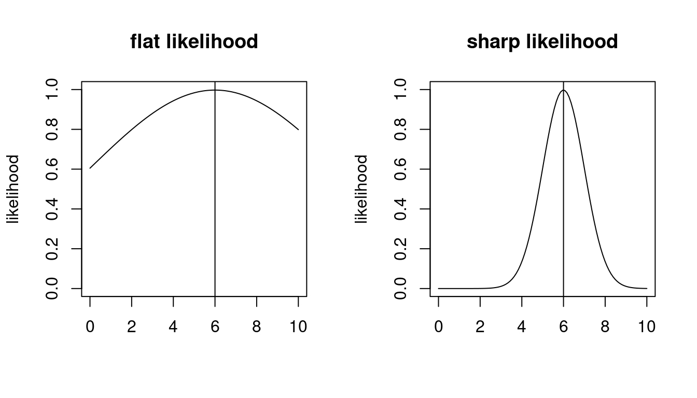

3 Maximum likelihood estimation
3.1 Overview
Outline of maximum likelihood estimation
Maximum likelihood is a very general method for fitting probabilistic models to data that generalises the method of least-squares. It plays a very important role in statistics and was mainly developed by R.A. Fisher in the early 20th century. 1
In a nutshell, the starting points in a maximum likelihood analysis are
- the observed data \(D = \{x_1,\ldots,x_n\}\) with \(n\) independent and identically distributed (iid) samples, with the ordering irrelevant, and a
- a model \(P_{\symbfit \theta}\) with corresponding probability density or probability mass function \(p(x|\symbfit \theta)\) and parameters \(\symbfit \theta\)
From model and data the likelihood function (note upper case “L”) is constructed as \[ L_n(\symbfit \theta|D)=\prod_{i=1}^{n} p(x_i|\symbfit \theta) \] Equivalently, the log-likelihood function (note lower case “l”) is \[ l_n(\symbfit \theta|D)=\sum_{i=1}^n \log p(x_i|\symbfit \theta) \] The likelihood is multiplicative and the log-likelihood additive over the samples \(x_i\).

The maximum likelihood estimate (MLE) \(\hat{\symbfit \theta}^{ML}\) is then found by maximising the (log)-likelihood function with regard to the parameters \(\symbfit \theta\) (see Figure 3.1): \[ \hat{\symbfit \theta}_{ML} = \text{arg max}\, l_n(\symbfit \theta|D) \]
Hence, once the model is chosen and data are collected, finding the MLE and thus fitting the model to the data is an optimisation problem.
Depending on the complexity of the likelihood function and the number of the parameters finding the maximum likelihood can be very difficult. On the other hand, for likelihood functions constructed from common distribution families, such as exponential families, maximum likelihood estimation is very straightforward and can even be done analytically (this is the case for most examples we encounter in this course).
In practise in application to more complex models the optimisation required for maximum likelihood analysis is done on the computer, typically on the log-likelihood rather than on the likelihood function in order to avoid problems with the computer representation of small floating point numbers. Suitable optimisation algorithm may rely only on function values without requiring derivatives, or use in addition gradient and possibly curvature information. In recent years there has been a lot of progress in high-dimensional optimisation using combined numerical and analytical approaches (e.g. using automatic differentiation) and stochastic approximations (e.g. stochastic gradient descent).
Origin of the method of maximum likelihood
Historically, the likelihood has often interpreted and justified as the probability of the data given the model. However, this is not strictly correct. First, this interpretation only applies to discrete random variables. Second, since the samples \(x_1, \ldots, x_n\) are typically exchangeable (i.e. permutation invariant) even in this case one would still need to add a factor accounting for the multiplicity of the possible orderings of the samples to obtain the correct probability of the data. Third, the interpretation of likelihood as probability of the data completely breaks down for continuous random variables because then \(p(x |\symbfit \theta)\) is a density, not a probability.
Next, we will see that maximum likelihood estimation is a well-justified method that arises naturally from an entropy perspective. More specifically, the maximum likelihood estimate corresponds to the distribution \(P_{\symbfit \theta}\) that is closest in terms of KL divergence to the unknown true data generating model as represented by the observed data and the empirical distribution.
3.2 From entropy learning to maximum likelihood
The KL divergence between true model and approximating model
Assume we have observations \(D = \{x_1, \ldots, x_n\}\). The data are sampled from \(F\), the true but unknown data generating distribution. We also specify a family of distributions \(P_{\symbfit \theta}\) indexed by \(\symbfit \theta\) to approximate \(F\).
The KL divergence \(D_{\text{KL}}(F,P_{\symbfit \theta})\) measures the divergence of the approximation \(P_{\symbfit \theta}\) from the unknown true model \(F\). It can be written as \[ \begin{split} D_{\text{KL}}(F,P_{\symbfit \theta}) &= H(F,P_{\symbfit \theta}) - H(F) \\ &= \underbrace{- \text{E}_{F}\log p_{\symbfit \theta}(x)}_{\text{cross-entropy}} -(\underbrace{-\text{E}_{F}\log f(x)}_{\text{entropy of $F$, does not depend on $\symbfit \theta$}})\\ \end{split} \]
However, since we do not know \(F\) we cannot actually compute this divergence. Nonetheless, we may use the empirical distribution \(\hat{F}_n\) — a function of the observed data — as approximation for \(F\), and in this way we arrive at an approximation for \(D_{\text{KL}}(F,P_{\symbfit \theta})\) that becomes more and more accurate with growing sample size.
Recall the “Law of Large Numbers” :
The empirical distribution \(\hat{F}_n\) based on observed data \(D=\{x_1, \ldots, x_n\}\) converges strongly (almost surely) to the true underlying distribution \(F\) as \(n \rightarrow \infty\): \[ \hat{F}_n\overset{a. s.}{\to} F \]
Correspondingly, for \(n \rightarrow \infty\) the average \(\text{E}_{\hat{F}_n}(h(x)) = \frac{1}{n} \sum_{i=1}^n h(x_i)\) converges to the expectation \(\text{E}_{F}(h(x))\).
Hence, for large sample size \(n\) we can approximate cross-entropy and as a result the KL divergence. The cross-entropy \(H(F, P_{\symbfit \theta})\) is approximated by the empirical cross-entropy where the expectation is taken with regard to \(\hat{F}_n\) rather than \(F\): \[ \begin{split} H(F, P_{\symbfit \theta}) & \approx H(\hat{F}_n, P_{\symbfit \theta}) \\ & = - \text{E}_{\hat{F}_n} (\log p(x|\symbfit \theta)) \\ & = -\frac{1}{n} \sum_{i=1}^n \log p(x_i | \symbfit \theta) \\ & = -\frac{1}{n} l_n ({\symbfit \theta}| D) \end{split} \] The empirical cross-entropy is equal to the negative log-likelihood standardised by the sample size \(n\). Conversely, the log-likelihood is the negative empirical cross-entropy multiplied by sample size \(n\).
Minimum KL divergence and maximum likelihood
If we knew \(F\) we would simply minimise \(D_{\text{KL}}(F, P_{\symbfit \theta})\) to find the particular model \(P_{\symbfit \theta}\) that is closest to the true model, or equivalent, we would minimise the cross-entropy \(H(F, P_{\symbfit \theta})\). However, since we actually don’t know \(F\) this is not possible.
However, for large sample size \(n\) when the empirical distribution \(\hat{F}_n\) is a good approximation for \(F\), we can use the results from the previous section. Thus, instead of minimising the KL divergence \(D_{\text{KL}}(F, P_{\symbfit \theta})\) we simply minimise \(H(\hat{F}_n, P_{\symbfit \theta})\) which is the same as maximising the log-likelihood \(l_n ({\symbfit \theta}| D)\).
Conversely, this implies that maximising the likelihood with regard to the \(\symbfit \theta\) is equivalent ( asymptotically for large \(n\)!) to minimising the KL divergence of the approximating model and the unknown true model.
\[ \begin{split} \hat{\symbfit \theta}^{ML} &= \underset{\symbfit \theta}{\arg \max}\,\, l_n(\symbfit \theta| D) \\ &= \underset{\symbfit \theta}{\arg \min}\,\, H(\hat{F}_n, P_{\symbfit \theta}) \\ &\approx \underset{\symbfit \theta}{\arg \min}\,\, D_{\text{KL}}(F, P_{\symbfit \theta}) \\ \end{split} \]
Therefore, the reasoning behind the method of maximum likelihood is that it minimises a large sample approximation of the KL divergence of the candidate model \(P_{\symbfit \theta}\) from the unkown true model \(F\). In other words, maximum likelihood estimators are minimum empirical KL divergence estimators.
As the KL divergence is a functional of the true distribution \(F\) maximum likelihood provides empirical estimators for parametric models.
As a consequence of the close link of maximum likelihood and KL divergence maximum likelihood inherits for large \(n\) (and only then!) all the optimality properties from KL divergence.
3.3 Properties of maximum likelihood estimation
Consistency of maximum likelihood estimates
One important property of the method of maximum likelihood is that in general it produces consistent estimates. This means that estimates are well behaved so that they become more accurate with more data and in the limit of infinite data converge to the true parameters.
Specifically, if the true underlying model \(F_{\text{true}}\) is contained in the set of specified candidates models \(P_{\symbfit \theta}\) \[ \underbrace{F_{\text{true}}}_{\text{true model}} \subset \underbrace{P_{\symbfit \theta}}_{\text{specified models}} \] so that there is a parameter \(\symbfit \theta_{\text{true}}\) for which \(F_{\text{true}} = P_{\symbfit \theta_{\text{true}}}\), then \[\hat{\symbfit \theta}_{ML} \overset{\text{large }n}{\longrightarrow} \symbfit \theta_{\text{true}} \]
This is a consequence of \(D_{\text{KL}}(F_{\text{true}},P_{\symbfit \theta})\rightarrow 0\) for \(P_{\symbfit \theta} \rightarrow F_{\text{true}}\), and that maximisation of the likelihood function is for large \(n\) equivalent to minimising the KL divergence.
Thus given sufficient data the maximum likelihood estimate of the parameters of the model will converge to the true value of the parameters. Note that this also assumes that the model and in particular the number of parameters is fixed. As a consequence of consistency, maximum likelihood estimates are asympotically unbiased. As we will see in the examples they can still be biased in finite samples.
Note that even if the candidate model family \(P_{\symbfit \theta}\) is misspecified (so that it does not contain the actual true model), the maximum likelihood estimate is still optimal in the sense in that it will identify the model in the model family that is closest in terms of empirical KL divergence.
Finally, it is possible to find inconsistent maximum likelihood estimates, but this occurs only in situations when the MLE lies at a boundary or when there are singularities in the likelihood function (in both cases the models are not regular). Furthermore, models are inconsistent by construction when the number of parameters grows with sample size (e.g. in the famous Neyman-Scott paradox) as the data available per parameter does not decrease.
Invariance property of the maximum likelihood
The maximum likelihood invariance principle states that the achieved maximum likelihood is invariant against reparameterisation of the model parameters. This property is shared by the KL divergence minimisation procedure as the achieved minimum KL divergence is also invariant against the change of parameters.
Recall that the model parameter is just an arbitrary label to index a specific distribution within a distribution family, and changing that label does not affect the maximum (likelihood) or the minimum (KL divergence). For example, consider a function \(h_x(x)\) with a maximum at \(x_{\max} = \text{arg max } h_x(x)\). Now we relabel the argument using \(y = g(x)\) where \(g\) is an invertible function. Then the function in terms of \(y\) is \(h_y(y) = h_x( g^{-1}(y))\). and clearly this function has a maximum at \(y_{\max} = g(x_{\max})\) since \(h_y(y_{\max}) = h_x(g^{-1}(y_{\max} ) ) = h_x( x_{\max} )\). Furthermore, the achieved maximum value is the same.
In application to maximum likelihood, assume we transform a parameter \(\theta\) into another parameter \(\omega\) using some invertible function \(g()\) so that \(\omega= g(\theta)\). Then the maximum likelihood estimate \(\hat{\omega}_{ML}\) of the new parameter \(\omega\) is simply the transformation of the maximum likelihood estimate \(\hat{\theta}_{ML}\) of the original parameter \(\theta\) with \(\hat{\omega}_{ML}= g( \hat{\theta}_{ML})\). The achieved maximum likelihood is the same in both cases.
The invariance property can be very useful in practise because it is often easier (and sometimes numerically more stable) to maximise the likelihood for a different set of parameters.
See Worksheet L1 for an example application of the invariance principle.
Sufficient statistics
Another important concept are so-called sufficient statistics to summarise the information available in the data about a parameter in a model.
A statistic \(\symbfit t(D)\) is called a sufficient statistic for the model parameters \(\symbfit \theta\) if the corresponding likelihood function can be written using only \(\symbfit t(D)\) in the terms that involve \(\symbfit \theta\) such that \[ L(\symbfit \theta| D) = h( \symbfit t(D) , \symbfit \theta) \, k(D) \,, \] where \(h()\) and \(k()\) are positive-valued functions. This is known as the Fisher-Pearson factorisation. Equivalently on log-scale this becomes \[ l_n(\symbfit \theta| D) = \log h( \symbfit t(D) , \symbfit \theta) + \log k(D) \,. \]
By construction, estimation and inference about \(\symbfit \theta\) based on the factorised likelihood \(L(\symbfit \theta)\) is mediated through the sufficient statistic \(\symbfit t(D)\) and does not require knowledge of the original data \(D\). Instead, the sufficient statistic \(\symbfit t(D)\) contains all the information in \(D\) required to learn about the parameter \(\symbfit \theta\).
Note that a sufficient statistic always exists since the data \(D\) are themselves sufficient statistics, with \(\symbfit t(D) = D\). However, in practise one aims to find sufficient statistics that summarise the data \(D\) and hence provide data reduction. This will become clear in the examples below.
Furthermore, sufficient statistics are not unique since applying a one-to-one transformation to \(\symbfit t(D)\) yields another sufficient statistic.
Therefore, if the MLE \(\hat{\symbfit \theta}_{ML}\) of \(\symbfit \theta\) exists and is unique then the MLE is a unique function of the sufficient statistic \(\symbfit t(D)\). If the MLE is not unique then it can be chosen to be function of \(\symbfit t(D)\).
3.4 Maximum likelihood estimation for regular models
Regular models
A regular model is one that is well-behaved and well-suited for model fitting by optimisation. In particular this requires that:
the support does not depend on the parameters,
the model is identifiable (in particular the model is not overparameterised and has a minimal set of parameters),
the density/probability mass function and hence the log-likelihood function is twice differentiable everywhere with regard to the parameters,
the maximum (peak) of the likelihood function lies inside the parameter space and not at a boundary,
the second derivative of the log-likelihood at the maximum is negative and not zero (for multiple parameters: the Hessian matrix at the maximum is negative definite and not singular)
Most models considered in this course are regular.
Maximum likelihood estimation in regular models
For a regular model maximum likelihood estimation and the necessary optimisation is greatly simplified by being able to using gradient and curvature information.
In order to maximise \(l_n(\symbfit \theta|D)\) one may use the score function \(\symbfit S(\symbfit \theta)\) which is the first derivative of the log-likelihood function with regard to the parameters 2
\[\begin{align*} \begin{array}{cc} S_n(\theta) = \frac{d l_n(\theta|D)}{d \theta}\\ \\ \\ \symbfit S_n(\symbfit \theta)=\nabla l_n(\symbfit \theta|D)\\ \\ \end{array} \begin{array}{ll} \text{scalar parameter $\theta$: first derivative}\\ \text{of log-likelihood function}\\ \\ \text{gradient if } \symbfit \theta\text{ is a vector}\\ \text{(i.e. if there's more than one parameter)}\\ \end{array} \end{align*}\]
In this case a necessary (but not sufficient) condition for the MLE is that \[ \symbfit S_n(\hat{\symbfit \theta}_{ML}) = 0 \]
To demonstrate that the log-likelihood function actually achieves a maximum at \(\hat{\symbfit \theta}_{ML}\) the curvature at the MLE must negative, i.e. that the log-likelihood must be locally concave at the MLE.
In the case of a single parameter (scalar \(\theta\)) this requires to check that the second derivative of the log-likelihood function with regard to the parameter is negative: \[ \frac{d^2 l_n(\hat{\theta}_{ML}| D)}{d \theta^2} <0 \] In the case of a parameter vector (multivariate \(\symbfit \theta\)) you need to compute the Hessian matrix (matrix of second order derivatives) at the MLE: \[ \nabla \nabla^T l_n(\hat{\symbfit \theta}_{ML}| D) \] and then verify that this matrix is negative definite (i.e. all its eigenvalues must be negative). For multivariate parameter vector \(\symbfit \theta\) of dimension \(d\) the Hessian is a matrix of size \(d \times d\).
Invariance of score function and second derivative of the log-likelihood
The score function \(\symbfit S_n(\symbfit \theta)\) is invariant against transformation of the sample space. Assume \(\symbfit x\) has log-density \(\log f_{\symbfit x}(\symbfit x| \symbfit \theta)\) then the log-density for \(\symbfit y\) is \[ \log f_{\symbfit y}(\symbfit y| \symbfit \theta) = \log |\det\left( D\symbfit x(\symbfit y) \right)| + \log f_{\symbfit x}\left( \symbfit x(\symbfit y)| \symbfit \theta\right) \] where \(D\symbfit x(\symbfit y)\) is the Jacobian matrix of the inverse transformation \(\symbfit x(\symbfit y)\). When taking the derivative of the log-likelihood function with regard to the parameter \(\symbfit \theta\) the first term containing the Jacobian determinant vanishes. Hence the score function \(\symbfit S_n(\symbfit \theta)\) is not affected by a change of variables.
As a consequence, the second derivative of log-likelihood function with regard to \(\symbfit \theta\) is also invariant against transformations of the sample space.
3.5 Maximum likelihood estimation in practise
Likelihood estimation for a single parameter
In the following we illustrate likelihood estimation for models with a single parameter. In this case the score function and the second derivative of the log-likelihood are all scalar-valued like the log-likelihood function itself.
Example 3.1 Maximum likelihood estimation for the Bernoulli model:
We aim to estimate the true proportion \(\theta\) in a Bernoulli experiment with binary outcomes, say the proportion of “successes” vs. “failures” or of “heads” vs. “tails” in a coin tossing experiment.
- Bernoulli model \(\text{Ber}(\theta)\): \(\text{Pr}(\text{"success"}) = \theta\) and \(\text{Pr}(\text{"failure"}) = 1-\theta\).
- The “success” is indicated by outcome \(x=1\) and the “failure” by \(x=0\).
- We conduct \(n\) trials and record \(n_1\) successes and \(n-n_1\) failures.
- Parameter: \(\theta\) probability of “success”.
What is the MLE of \(\theta\)?
the observations \(D=\{x_1, \ldots, x_n\}\) take on values 0 or 1.
the average of the data points is \(\bar{x} = \frac{1}{n} \sum_{i=1}^n x_i = \frac{n_1}{n}\).
the probability mass function (PMF) of the Bernoulli distribution \(\text{Ber}(\theta)\) is: \[ p(x| \theta) = \theta^x (1-\theta)^{1-x} = \begin{cases} \theta & \text{if $x=1$ }\\ 1-\theta & \text{if $x=0$} \\ \end{cases} \]
log-PMF: \[ \log p(x| \theta) = x \log(\theta) + (1-x) \log(1 - \theta) \]
log-likelihood function: \[ \begin{split} l_n(\theta| D) & = \sum_{i=1}^n \log p(x_i| \theta) \\ & = n_1 \log \theta + (n-n_1) \log(1-\theta) \\ & = n \left( \bar{x} \log \theta + (1-\bar{x}) \log(1-\theta) \right) \\ \end{split} \] Note that the log-likelihood depends on the data only via \(\bar{x}\). Thus, \(t(D) = \bar{x}\) is a sufficient statistic for the parameter \(\theta\). In fact it is also a minimally sufficient statistic as will be discussed in more detail later.
Score function: \[ S_n(\theta)= \frac{dl_n(\theta| D)}{d\theta}= n \left( \frac{\bar{x}}{\theta}-\frac{1-\bar{x}}{1-\theta} \right) \]
Maximum likelihood estimate: Setting \(S_n(\hat{\theta}_{ML})=0\) yields as solution \[ \hat{\theta}_{ML} = \bar{x} = \frac{n_1}{n} \]
With \(\frac{dS_n(\theta)}{d\theta} = -n \left( \frac{\bar{x}}{\theta^2} + \frac{1-\bar{x}}{(1-\theta)^2} \right) <0\) the optimum corresponds indeed to the maximum of the (log-)likelihood function as this is negative for \(\hat{\theta}_{ML}\) (and indeed for any \(\theta\)).
The maximum likelihood estimator of \(\theta\) is therefore identical to the frequency of the successes among all observations.
Note that to analyse the coin tossing experiment and to estimate \(\theta\) we may equally well use the binomial distribution \(\text{Bin}(n, \theta)\) as model for the number of successes. This results in the same MLE for \(\theta\) but the likelihood function based on the binomial PMF includes the binomial coefficient. However, as it does not depend on \(\theta\) it disappears in the score function and has no influence in the derivation of the MLE.
Example 3.2 Maximum likelihood estimation for the normal distribution with unknown mean and known variance:
- \(x \sim N(\mu,\sigma^2)\) with \(\text{E}(x)=\mu\) and \(\text{Var}(x) = \sigma^2\)
- the parameter to be estimated is \(\mu\) whereas \(\sigma^2\) is known.
What’s the MLE of the parameter \(\mu\)?
the data \(D= \{x_1, \ldots, x_n\}\) are all real in the range \(x_i \in [-\infty, \infty]\).
the average \(\bar{x} = \frac{1}{n} \sum_{i=1}^n x_i\) is real as well.
Density: \[ p(x| \mu)= \frac{1}{\sqrt{2\pi\sigma^2}} \exp\left(-\frac{(x-\mu)^2}{2\sigma^2}\right)\]
Log-Density: \[\log p(x| \mu) =-\frac{1}{2} \log(2\pi\sigma^2) - \frac{(x-\mu)^2}{2\sigma^2}\]
Log-likelihood function: \[ \begin{split} l_n(\mu| D) &= \sum_{i=1}^n \log p(x_i| \mu)\\ &=-\frac{1}{2\sigma^2}\sum_{i=1}^n(x_i-\mu)^2 \underbrace{-\frac{n}{2}\log(2 \pi \sigma^2) }_{\text{constant term, does not depend on } \mu \text{, can be removed}}\\ &=-\frac{1}{2\sigma^2}\sum_{i=1}^n(x_i^2 - 2 x_i \mu+\mu^2) + \text{ const.}\\ &=\frac{n}{\sigma^2} ( \bar{x} \mu - \frac{1}{2}\mu^2) \underbrace{ - \frac{1}{2\sigma^2}\sum_{i=1}^n x_i^2 }_{\text{another constant term}} + \text{ const.}\\ \end{split} \] Note how the non-constant terms of the log-likelihood depend on the data only through \(\bar{x}\). Hence \(t(D) =\bar{x}\) this is a sufficient statistic for \(\mu\).
Score function: \[ S_n(\mu) = \frac{n}{\sigma^2} ( \bar{x}- \mu) \]
Maximum likelihood estimate: \[S_n(\hat{\mu}_{ML})=0 \Rightarrow \hat{\mu}_{ML} = \bar{x}\]
With \(\frac{dS_n(\mu)}{d\mu} = -\frac{n}{\sigma^2}<0\) the optimum is indeed the maximum
The constant term in the log-likelihood function collects all terms that do not depend on the parameter of interest. After taking the first derivative with regard to the parameter the constant term disappears thus it has no influence in maximum likelhood estimation. Therefore constant terms can be dropped from the log-likelihood function.
Example 3.3 Maximum likelihood estimation for the normal distribution with known mean and unknown variance:
- \(x \sim N(\mu,\sigma^2)\) with \(\text{E}(x)=\mu\) and \(\text{Var}(x) = \sigma^2\)
- \(\sigma^2\) needs to be estimated whereas the mean \(\mu\) is known
What’s the MLE of \(\sigma^2\)?
the data \(D= \{x_1, \ldots, x_n\}\) are all real in the range \(x_i \in [-\infty, \infty]\).
the average of the squared centred data \(\overline{(x-\mu)^2} = \frac{1}{n} \sum_{i=1}^n (x_i-\mu)^2 \geq 0\) is non-negative.
Density: \[ p(x| \sigma^2)=(2\pi\sigma^2)^{-\frac{1}{2}}\exp\left(-\frac{(x-\mu)^2}{2\sigma^2}\right)\]
Log-Density: \[\log p(x | \sigma^2) =-\frac{1}{2} \log(2\pi\sigma^2) - \frac{(x-\mu)^2}{2\sigma^2}\]
Log-likelihood function: \[ \begin{split} l_n(\sigma^2 | D) & = l_n(\mu, \sigma^2 | D) = \sum_{i=1}^n \log p(x_i| \sigma^2)\\ &= -\frac{n}{2}\log(\sigma^2)-\frac{1}{2\sigma^2}\sum_{i=1}^n(x_i-\mu)^2 \underbrace{-\frac{n}{2} \log(2 \pi) }_{\text{constant not depending on } \sigma^2}\\ &= -\frac{n}{2}\log(\sigma^2)-\frac{n}{2\sigma^2} \overline{(x-\mu)^2} + C\\ \end{split} \] Note how the log-likelihood function depends on the data only through \(\overline{(x-\mu)^2}\). Hence \(t(D) = \overline{(x-\mu)^2}\) is a sufficient statistic for \(\sigma^2\).
Score function: \[ S_n(\sigma^2) = -\frac{n}{2\sigma^2}+\frac{n}{2\sigma^4} \overline{(x-\mu)^2} \]
Note that to obtain the score function the derivative needs to be taken with regard to the variance parameter \(\sigma^2\) — not with regard to \(\sigma\)! As a trick, relabel \(\sigma^2 = v\) in the log-likelihood function, then take the derivative with regard to \(v\), then backsubstitute \(v=\sigma^2\) in the final result.
Maximum likelihood estimate: \[ S_n(\widehat{\sigma^2}_{ML})=0 \Rightarrow \] \[ \widehat{\sigma^2}_{ML} =\overline{(x-\mu)^2} = \frac{1}{n}\sum_{i=1}^n (x_i-\mu)^2 \]
To confirm that we actually have maximum we need to verify that the second derivative of log-likelihood at the optimum is negative. With \(\frac{dS_n(\sigma^2)}{d\sigma^2} = -\frac{n}{2\sigma^4} \left(\frac{2}{\sigma^2} \overline{(x-\mu)^2} -1\right)\) and hence \(\frac{dS_n( \widehat{\sigma^2}_{ML} )}{d\sigma^2} = -\frac{n}{2} \left(\widehat{\sigma^2}_{ML} \right)^{-2}<0\) the optimum is indeed the maximum.
Likelihood estimation for multiple parameters
If there are several parameters likelihood estimation is conceptually no different from the case of a single parameter. However, the score function is now vector-valued and the second derivative of the log-likelihood is a matrix-valued function.
Example 3.4 Normal distribution with mean and variance both unknown:
- \(x \sim N(\mu,\sigma^2)\) with \(\text{E}(x)=\mu\) and \(\text{Var}(x) = \sigma^2\)
- both \(\mu\) and \(\sigma^2\) need to be estimated.
What’s the MLE of the parameter vector \(\symbfit \theta= (\mu,\sigma^2)^T\)?
the data \(D= \{x_1, \ldots, x_n\}\) are all real in the range \(x_i \in [-\infty, \infty]\).
the average \(\bar{x} = \frac{1}{n} \sum_{i=1}^n x_i\) is real as well.
the average of the squared data \(\overline{x^2} = \frac{1}{n} \sum_{i=1}^n x_i^2 \geq 0\) is non-negative.
Density: \[ f(x| \mu, \sigma^2)=(2\pi\sigma^2)^{-\frac{1}{2}}\exp\left(-\frac{(x-\mu)^2}{2\sigma^2}\right)\]
Log-Density: \[\log f(x | \mu, \sigma^2) =-\frac{1}{2} \log(2\pi\sigma^2) - \frac{(x-\mu)^2}{2\sigma^2}\]
Log-likelihood function: \[ \begin{split} l_n(\symbfit \theta| D) & = l_n(\mu, \sigma^2 | D) = \sum_{i=1}^n \log f(x_i| \mu, \sigma^2)\\ &= -\frac{n}{2}\log(\sigma^2)-\frac{1}{2\sigma^2}\sum_{i=1}^n(x_i-\mu)^2 \underbrace{-\frac{n}{2} \log(2 \pi) }_{\text{constant not depending on }\mu \text{ or } \sigma^2}\\ &= -\frac{n}{2}\log(\sigma^2)-\frac{n}{2\sigma^2} ( \overline{x^2} -2 \bar{x} \mu + \mu^2) + C\\ \end{split} \] Note how the log-likelihood function depends on the data only through \(\bar{x}\) and \(\overline{x^2}\). Hence, \(\symbfit t(D) = (\bar{x}, \overline{x^2})^T\) are sufficient statistics for \(\symbfit \theta\).
Score function \(\symbfit S_n\), gradient of \(l_n(\symbfit \theta| D)\): \[ \begin{split} \symbfit S_n(\symbfit \theta) &= \symbfit S_n(\mu,\sigma^2) \\ & =\nabla l_n(\mu, \sigma^2| D) \\ &= \begin{pmatrix} \frac{n}{\sigma^2} (\bar{x}-\mu) \\ -\frac{n}{2\sigma^2}+\frac{n}{2\sigma^4} \left( \overline{x^2} - 2\bar{x} \mu +\mu^2 \right) \\ \end{pmatrix}\\ \end{split} \]
Maximum likelihood estimate: \[ \symbfit S_n(\hat{\symbfit \theta}_{ML})=0 \Rightarrow \] \[ \hat{\symbfit \theta}_{ML}= \begin{pmatrix} \hat{\mu}_{ML} \\ \widehat{\sigma^2}_{ML} \\ \end{pmatrix} = \begin{pmatrix} \bar{x} \\ \overline{x^2} -\bar{x}^2\\ \end{pmatrix} \] The ML estimate of the variance can also be written \(\widehat{\sigma^2}_{ML} = \overline{x^2} -\bar{x}^2 =\overline{(x-\bar{x})^2} = \frac{1}{n}\sum_{i=1}^n (x_i-\bar{x})^2\).
To confirm that we actually have a maximum we need to verify that the eigenvalues of the Hessian matrix at the optimum are all negative. This is indeed the case, for details see Example 3.10.
Example 3.5 \({\color{Red} \blacktriangleright}\) Maximum likelihood estimates of the parameters of the multivariate normal distribution:
The results from Example 3.4 can be generalised to the multivariate normal distribution:
- \(\symbfit x\sim N(\symbfit \mu,\symbfit \Sigma)\) with \(\text{E}(\symbfit x)=\symbfit \mu\) and \(\text{Var}(\symbfit x) = \symbfit \Sigma\)
- both \(\symbfit \mu\) and \(\symbfit \Sigma\) need to be estimated.
With
- the data \(D= \{\symbfit x_1, \ldots, \symbfit x_n\}\) containing real vector-valued observations,
the maximum likelihood can be written as follows:
MLE for the mean: \[ \hat{\symbfit \mu}_{ML} = \frac{1}{n}\sum^{n}_{k=1} \symbfit x_k = \bar{\symbfit x} \]
MLE for the covariance: \[ \underbrace{\widehat{\symbfit \Sigma}_{ML}}_{d \times d} = \frac{1}{n}\sum^{n}_{k=1} \underbrace{\left(\symbfit x_k-\bar{\symbfit x}\right)}_{d \times 1} \; \underbrace{\left(\symbfit x_k-\bar{\symbfit x}\right)^T}_{1 \times d}\] Note the factor \(\frac{1}{n}\) in the estimator of the covariance matrix.
With \(\overline{\symbfit x\symbfit x^T} = \frac{1}{n}\sum^{n}_{k=1} \symbfit x_k \symbfit x_k^T\) we can also write \[ \widehat{\symbfit \Sigma}_{ML} = \overline{\symbfit x\symbfit x^T} - \bar{\symbfit x} \bar{\symbfit x}^T \]
Hence, the MLEs correspond to the well-known empirical estimates.
The derivation of the MLEs is discussed in more detail in the module MATH38161 Multivariate Statistics and Machine Learning.
Example 3.6 \({\color{Red} \blacktriangleright}\) Maximum likelihood estimation of the parameters of the categorical distribution:
Maximum likelihood estimation of the parameters of \(\text{Cat}(\symbfit \pi)\) at first seems a trivial extension of the Bernoulli model (cf. Example 3.1) but this a bit more complicated because of the constraint on the allowed values of \(\symbfit \pi\) so there are only \(K-1\) free parameters and not \(K\). Hence we either need to optimise with regard to a specific set of \(K-1\) parameters (which is what we do below) or use a constrained optimisation procedure to enforce that \(\sum_{k=1}^K \pi_k = 1\) (e.g using Lagrange multipliers).
The data: We observe \(n\) samples \(\symbfit x_1, \ldots, \symbfit x_n\). The data matrix of dimension \(n \times K\) is \(\symbfit X= (\symbfit x_1, \ldots, \symbfit x_n)^T = (x_{ik})\). It contains each \(\symbfit x_i = (x_{i1}, \ldots, x_{iK})^T\). The corresponding summary (minimal sufficient) statistics are \(\symbfit t(D) = \bar{\symbfit x} = \frac{1}{n} \sum_{i=1}^n \symbfit x_i = (\bar{x}_1, \ldots, \bar{x}_K)^T\) with \(\bar{x}_k = \frac{1}{n} \sum_{i=1}^n x_{ik}\). We can also write \(\bar{x}_{K} = 1 - \sum_{k=1}^{K-1} \bar{x}_{k}\). The number of samples for class \(k\) is \(n_k = n \bar{x}_k\) with \(\sum_{k=1}^K n_k = n\).
The log-likelihood is \[ \begin{split} l_n(\pi_1, \ldots, \pi_{K-1}) & = \sum_{i=1}^n \log f(\symbfit x_i) \\ & =\sum_{i=1}^n \left( \sum_{k=1}^{K-1} x_{ik} \log \pi_k + \left( 1 - \sum_{k=1}^{K-1} x_{ik} \right) \log \left( 1 - \sum_{k=1}^{K-1} \pi_k \right) \right)\\ & = n \left( \sum_{k=1}^{K-1} \bar{x}_k \log \pi_k + \left( 1 - \sum_{k=1}^{K-1} \bar{x}_{k} \right) \log\left(1 - \sum_{k=1}^{K-1} \pi_k\right) \right) \\ & = n \left( \sum_{k=1}^{K-1} \bar{x}_k \log \pi_k + \bar{x}_K \log \pi_K \right) \\ \end{split} \]
Score function (gradient) \[ \begin{split} \symbfit S_n(\pi_1, \ldots, \pi_{K-1}) &= \nabla l_n(\pi_1, \ldots, \pi_{K-1} ) \\ & = \begin{pmatrix} \frac{\partial}{\partial \pi_1} l_n(\pi_1, \ldots, \pi_{K-1} ) \\ \vdots\\ \frac{\partial}{\partial \pi_{K-1}} l_n(\pi_1, \ldots, \pi_{K-1} ) \\ \end{pmatrix}\\ & = n \begin{pmatrix} \frac{\bar{x}_1}{\pi_1}-\frac{\bar{x}_K}{\pi_K} \\ \vdots\\ \frac{\bar{x}_{K-1}}{\pi_{K-1}}-\frac{\bar{x}_K}{\pi_K} \\ \end{pmatrix}\\ \end{split} \] Note in particular the need for the second term that arises because \(\pi_K\) depends on all the \(\pi_1, \ldots, \pi_{K-1}\).
Maximum likelihood estimate: Setting \(\symbfit S_n(\hat{\pi}_1^{ML}, \ldots, \hat{\pi}_{K-1}^{ML})=0\) yields \(K-1\) equations \[ \bar{x}_i \left(1 - \sum_{k=1}^{K-1} \hat{\pi}_k^{ML}\right) = \hat{\pi}_i^{ML} \left( 1 - \sum_{k=1}^{K-1} \bar{x}_{k} \right) \] for \(i=1, \ldots, K-1\) and with solution \[ \hat{\pi}_i^{ML} = \bar{x}_i \] It also follows that \[ \hat{\pi}_K^{ML} = 1 - \sum_{k=1}^{K-1} \hat{\pi}_k^{ML} = 1 - \sum_{k=1}^{K-1} \bar{x}_{k} = \bar{x}_K \] The maximum likelihood estimator is therefore the frequency of the occurrence of a class among the \(n\) samples.
3.6 Further properties of ML
Relationship of maximum likelihood with least squares estimation
In Example 3.2 the form of the log-likelihood function is a function of the sum of squared differences. Maximising \(l_n(\mu| D) =-\frac{1}{2\sigma^2}\sum_{i=1}^n(x_i-\mu)^2\) is equivalent to minimising \(\sum_{i=1}^n(x_i-\mu)^2\). Hence, finding the mean by maximum likelihood assuming a normal model is equivalent to least-squares estimation!
Note that least-squares estimation has been in use at least since the early 1800s 3 and thus predates maximum likelihood (1922). Due to its simplicity it is still very popular in particular in regression and the link with maximum likelihood and normality allows to understand why it usually works well.
See also Example 2.3 and Example 2.15 for further links of the normal distribution with squared error.
Bias of maximum likelihood estimates
Example 3.4 is interesting because it shows that maximum likelihood can result in both biased and as well as unbiased estimators.
Recall that \(x \sim N(\mu, \sigma^2)\). As a result \[\hat{\mu}_{ML}=\bar{x} \sim N\left(\mu, \frac{\sigma^2}{n}\right)\] with \(\text{E}( \hat{\mu}_{ML} ) = \mu\) and \[ \widehat{\sigma^2}_{\text{ML}} \sim W_1\left(s^2 = \frac{\sigma^2}{n}, k=n-1\right) \] (see Section A.8) with mean \(\text{E}(\widehat{\sigma^2}_{ML}) = \frac{n-1}{n} \, \sigma^2\).
Therefore, the MLE of \(\mu\) is unbiased as
\[
\text{Bias}(\hat{\mu}_{ML}) = \text{E}( \hat{\mu}_{ML} ) - \mu = 0
\] In contrast, however, the MLE of \(\sigma^2\) is negatively biased because \[
\text{Bias}(\widehat{\sigma^2}_{ML}) = \text{E}( \widehat{\sigma^2}_{ML} ) - \sigma^2 = -\frac{1}{n} \, \sigma^2
\]
Thus, in the case of the variance parameter of the normal distribution the MLE is not recovering the well-known unbiased estimator of the variance
\[
\widehat{\sigma^2}_{UB} = \frac{1}{n-1}\sum_{i=1}^n(x_i-\bar{x})^2 = \frac{n}{n-1} \widehat{\sigma^2}_{ML}
\] In other words, the unbiased variance estimate is not a maximum likelihood estimate!
Therefore it is worth keeping in mind that maximum likelihood can result in biased estimates for finite \(n\). For large \(n\), however, the bias disappears as MLEs are consistent.
\({\color{Red} \blacktriangleright}\) Minimal sufficient statistics and maximal data reduction
In all the examples discussed above the sufficient statistic was typically either \(\bar{x}\) and \(\overline{x^2}\) (or both). This is not a coincidence since all of the examples are exponential families with canonical statistics \(x\) and \(x^2\), and in exponential families a sufficient statistic can be obtained as the average of the canonical statistics.
Crucially, in the above examples the identified sufficient statistics are also minimal sufficient statistics where the dimension of sufficient statistic is equal to the dimension of the parameter vector, and as such as low as possible. Minimal sufficient statistics provide maximal data reduction as will be discussed later.
3.7 Observed Fisher information
Definition of the observed Fisher information
Visual inspection of the log-likelihood function (e.g. Figure 3.2) suggests that it contains more information about the parameter \(\symbfit \theta\) than just the location of the maximum point at \(\hat{\symbfit \theta}_{ML}\).
In particular, in a regular model the curvature of the log-likelihood function at the MLE seems to be related to the accuracy of \(\hat{\symbfit \theta}_{ML}\): if the likelihood surface is flat near the maximum (low curvature) then if is more difficult to find the optimal parameter (also numerically). Conversely, if the likelihood surface is sharply peaked (strong curvature) then the maximum point is well defined.
The curvature can be quantified by the second-order derivatives (Hessian matrix) of the log-likelihood function.
Accordingly, the observed Fisher information (matrix) is defined as the negative curvature at the MLE \(\hat{\symbfit \theta}_{ML}\): \[ {\symbfit J_n}(\hat{\symbfit \theta}_{ML}) = -\nabla \nabla^T l_n(\hat{\symbfit \theta}_{ML}| D) \]
Sometimes this is simply called the “observed information”. To avoid confusion with the expected Fisher information \[ \symbfit I^{\text{Fisher}}(\symbfit \theta) = -\text{E}_{F_{\symbfit \theta}} \left( \nabla \nabla^T \log f(x|\symbfit \theta)\right) \] introduced earlier it is necessary to always use the qualifier “observed” when referring to \({\symbfit J_n}(\hat{\symbfit \theta}_{ML})\).
We will see in more detail later that the observed Fisher information plays an important role at quantifying the uncertainty of a maximum likelihood estimate.
Transformation properties
As a consequence of the invariance of the score function and curvature function the observed Fisher information is invariant against transformations of the sample space. This is the same invariance also shown by the expected Fisher information and by the KL divergence.
\({\color{Red} \blacktriangleright}\) Like the expected Fisher information the observed Fisher information (as a Hessian matrix) transforms covariantly under change of model parameters — see Section 2.7.4.
Relationship between observed and expected Fisher information
The observed Fisher information \(\symbfit J_n(\hat{\symbfit \theta}_{ML})\) and the expected Fisher information \(\symbfit I^{\text{Fisher}}(\symbfit \theta)\) are related but also two clearly different entities.
Curvature based:
- Both types of Fisher information are based on computing second order derivatives (Hessian matrix), thus both are based on the curvature of a function.
Transformation properties:
Both quantities are invariant against changes of the parameterisation of the sample space.
\({\color{Red} \blacktriangleright}\) Both transform covariantly when changing the parameter of the distribution.
Data-based vs. model only:
The observed Fisher information is computed from the log-likelihood function. Therefore it takes both the model and the observed data \(D\) into account and explicitly depends on the sample size \(n\). It contains estimates of the parameters but not the parameters themselves. While the curvature of the log-likelihood function may be computed for any point of the log-likelihood function the observed Fisher information specifically refers to the curvature at the MLE \(\hat{\symbfit \theta}_{ML}\). It is linked to the (asymptotic) variance of the MLE (see the examples and as will be discussed in more detail later).
In contrast, the expected Fisher information is derived directly from the log-density of the model family. It does not depend on the observed data, and thus does not depend on sample size. It makes sense and can be computed for any value of the parameters. It describes the geometry of the space of the model family, and is the local approximation of KL information.
Large sample equivalence:
- Assume that for large sample size \(n\) the MLE converges to \(\hat{\symbfit \theta}_{ML} \rightarrow \symbfit \theta_0\). It follows from the construction of the observed Fisher information and the law of large numbers that asymptotically for large sample size \(\symbfit J_n(\hat{\symbfit \theta}_{ML}) \rightarrow n \symbfit I^{\text{Fisher}}( \symbfit \theta_0 )\) (i.e. the expected Fisher information for a set of iid random variables, see Section 2.7.2.
\({\color{Red} \blacktriangleright}\) Finite sample equivalence for exponential families:
- In a very important class of models, namely for exponential families, we find that \(\symbfit J_n(\hat{\symbfit \theta}_{ML}) = n \symbfit I^{\text{Fisher}}( \hat{\symbfit \theta}_{ML} )\) is valid also for finite sample size \(n\). This can be directly seen from the special instances of exponential families such as the Bernoulli distribution (Example 2.22 and Example 3.7), the normal distribution with one parameter (Example 2.24 and Example 3.8), the normal distribution with two parameters (Example 2.25 and Example 3.10) and the categorical distribution (Example 2.26 and Example 3.11).
- However, exponential families are an exception. In a general model \(\symbfit J_n(\hat{\symbfit \theta}_{ML}) \neq n \symbfit I^{\text{Fisher}}( \hat{\symbfit \theta}_{ML} )\) for finite sample size \(n\). As an example consider the location-scale \(t\)-distribution \(\text{lst}(\mu, \tau^2, \nu)\) with unknown median parameter \(\mu\) and known scale parameter \(\tau^2\) and given degree of freedom \(\nu\). This is not an exponential family model (unless \(\nu \rightarrow \infty\) when it becomes the normal distribution). It can be shown that the expected Fisher information is \(I^{\text{Fisher}}(\mu )=\frac{\nu+1}{\nu+3} \frac{1}{\tau^2}\) but the observed Fisher information \(J_n(\hat{\mu}_{ML}) \neq n \frac{\nu+1}{\nu+3} \frac{1}{\tau^2}\) with a maximum likelihood estimate \(\hat{\mu}_{ML}\) that can only be computed numerically with no closed form available.
3.8 Observed Fisher information examples
Models with a single parameter
Example 3.7 Observed Fisher information for the Bernoulli model \(\text{Ber}(\theta)\):
We continue Example 3.1. The negative second derivative of the log-likelihood function is \[ -\frac{d S_n(\theta)}{d\theta}=n \left( \frac{ \bar{x} }{\theta^2} + \frac{1 - \bar{x} }{(1-\theta)^2} \right) \] The observed Fisher information is therefore \[ \begin{split} J_n(\hat{\theta}_{ML}) & = n \left(\frac{ \bar{x} }{\hat{\theta}_{ML}^2} + \frac{ 1 - \bar{x} }{ (1-\hat{\theta}_{ML})^2 } \right) \\ & = n \left(\frac{1}{\hat{\theta}_{ML}} + \frac{1}{1-\hat{\theta}_{ML}} \right) \\ &= \frac{n}{\hat{\theta}_{ML} (1-\hat{\theta}_{ML})} \\ \end{split} \]
The inverse of the observed Fisher information is: \[J_n(\hat{\theta}_{ML})^{-1}=\frac{\hat{\theta}_{ML}(1-\hat{\theta}_{ML})}{n}\]
Compare this with \(\text{Var}\left(\frac{x}{n}\right) = \frac{\theta(1-\theta)}{n}\) for \(x \sim \text{Bin}(n, \theta)\).
Example 3.8 Observed Fisher information for the normal distribution with unknown mean and known variance:
This is the continuation of Example 3.2. The negative second derivative of the score function is \[ -\frac{d S_n(\mu)}{d\mu}= \frac{n}{\sigma^2} \] The observed Fisher information at the MLE is therefore \[ J_n(\hat{\mu}_{ML}) = \frac{n}{\sigma^2} \] and the inverse of the observed Fisher information is \[ J_n(\hat{\mu}_{ML})^{-1} = \frac{\sigma^2}{n} \]
For \(x_i \sim N(\mu, \sigma^2)\) we have \(\text{Var}(x_i) = \sigma^2\) and hence \(\text{Var}(\bar{x}) = \frac{\sigma^2}{n}\), which is equal to the inverse observed Fisher information.
Example 3.9 Observed Fisher information for the normal distribution with known mean and unknown variance:
This is the continuation of Example 3.3.
- Correspondingly, the observed Fisher information is \[ J_n(\widehat{\sigma^2}_{ML}) = \frac{n}{2} \left(\widehat{\sigma^2}_{ML} \right)^{-2} \] and its inverse is \[ J_n(\widehat{\sigma^2}_{ML})^{-1} = \frac{2}{n} \left(\widehat{\sigma^2}_{ML} \right)^{2} \]
With \(x_i \sim N(\mu, \sigma^2)\) the empirical variance \(\widehat{\sigma^2}_{ML}\) follows a one-dimensional Wishart distribution \[ \widehat{\sigma^2}_{\text{ML}} \sim W_1\left(s^2 = \frac{\sigma^2}{n}, k=n-1\right) \] (see Section A.8) and hence has variance \(\text{Var}(\widehat{\sigma^2}_{ML}) = \frac{n-1}{n} \, \frac{2 \sigma ^4}{n}\). For large \(n\) this becomes \(\text{Var}\left(\widehat{\sigma^2}_{ML}\right)\overset{a}{=} \frac{2}{n} \left(\sigma^2\right)^2\) which is (apart from the “hat”) the inverse of the observed Fisher information.
Models with multiple parameters
Example 3.10 Observed Fisher information for the normal distribution with mean and variance parameter:
This is the continuation of Example 3.4.
The Hessian matrix of the log-likelihood function is \[\nabla \nabla^T l_n(\mu,\sigma^2| D) = \begin{pmatrix} - \frac{n}{\sigma^2}& -\frac{n}{\sigma^4} (\bar{x} -\mu)\\ - \frac{n}{\sigma^4} (\bar{x} -\mu) & \frac{n}{2\sigma^4}-\frac{n}{\sigma^6} \left(\overline{x^2} - 2 \mu \bar{x} + \mu^2\right) \\ \end{pmatrix} \] The negative Hessian at the MLE, i.e. at \(\hat{\mu}_{ML} = \bar{x}\) and \(\widehat{\sigma^2}_{ML} = \overline{x^2} -\bar{x}^2\), yields the observed Fisher information matrix: \[ \symbfit J_n(\hat{\mu}_{ML},\widehat{\sigma^2}_{ML}) = \begin{pmatrix} \frac{n}{\widehat{\sigma^2}_{ML}}&0 \\ 0 & \frac{n}{2(\widehat{\sigma^2}_{ML})^2} \end{pmatrix} \] The observed Fisher information matrix is diagonal with positive entries. Therefore its eigenvalues are all positive as required for a maximum, because for a diagonal matrix the eigenvalues are simply the the entries on the diagonal.
The inverse of the observed Fisher information matrix is \[ \symbfit J_n(\hat{\mu}_{ML},\widehat{\sigma^2}_{ML})^{-1} = \begin{pmatrix} \frac{\widehat{\sigma^2}_{ML}}{n}& 0\\ 0 & \frac{2(\widehat{\sigma^2}_{ML})^2}{n} \end{pmatrix} \]
Example 3.11 \({\color{Red} \blacktriangleright}\) Observed Fisher information of the categorical distribution:
We continue Example 3.6. We first need to compute the negative Hessian matrix of the log likelihood function \(- \nabla \nabla^T l_n(\pi_1, \ldots, \pi_{K-1} )\) and then evaluate it at the MLEs \(\hat{\pi}_1^{ML}, \ldots, \hat{\pi}_{K-1}^{ML}\).
The diagonal entries of the Hessian matrix (with \(i=1, \ldots, K-1\)) are \[ \frac{\partial^2}{\partial \pi_i^2} l_n(\pi_1, \ldots, \pi_{K-1} ) = -n \left( \frac{\bar{x}_i}{\pi_i^2} +\frac{\bar{x}_K}{\pi_K^2}\right) \] and its off-diagonal entries are (with \(j=1, \ldots, K-1\)) \[ \frac{\partial^2}{\partial \pi_i \partial \pi_j} l_n(\pi_1, \ldots, \pi_{K-1} ) = -\frac{n \bar{x}_K}{\pi_K^2} \] Thus, the observed Fisher information matrix at the MLE for a categorical distribution is the \(K-1 \times K-1\) dimensional matrix \[ \begin{split} \symbfit J_n(\hat{\pi}_{1}^{ML}, \ldots, \hat{\pi}_{K-1}^{ML} ) &= n \begin{pmatrix} \frac{1}{\hat{\pi}_1^{ML}} + \frac{1}{\hat{\pi}_K^{ML}} & \cdots & \frac{1}{\hat{\pi}_K^{ML}} \\ \vdots & \ddots & \vdots \\ \frac{1}{\hat{\pi}_K^{ML}} & \cdots & \frac{1}{\hat{\pi}_{K-1}^{ML}} + \frac{1}{\hat{\pi}_K^{ML}} \\ \end{pmatrix} \\ & = n \text{Diag}\left( \frac{1}{\hat{\pi}_1^{ML}} , \ldots, \frac{1}{\hat{\pi}_{K-1}^{ML}} \right) + \frac{n}{\hat{\pi}_K^{ML}}\symbfup 1\\ \end{split} \]
For \(K=2\) (cf. Example 3.7) this reduces to the observed Fisher information of a Bernoulli variable \[ \begin{split} J_n(\hat{\theta}_{ML}) & = n \left(\frac{1}{\hat{\theta}_{ML}} + \frac{1}{1-\hat{\theta}_{ML}} \right) \\ &= \frac{n}{\hat{\theta}_{ML} (1-\hat{\theta}_{ML})} \\ \end{split} \]
The inverse of the observed Fisher information is: \[ \symbfit J_n(\hat{\pi}_{1}^{ML}, \ldots, \hat{\pi}_{K-1}^{ML} )^{-1} = \frac{1}{n} \begin{pmatrix} \hat{\pi}_1^{ML} (1- \hat{\pi}_1^{ML} ) & \cdots & - \hat{\pi}_{1}^{ML} \hat{\pi}_{K-1}^{ML} \\ \vdots & \ddots & \vdots \\ - \hat{\pi}_{K-1}^{ML} \hat{\pi}_{1}^{ML} & \cdots & \hat{\pi}_{K-1}^{ML} (1- \hat{\pi}_{K-1}^{ML} ) \\ \end{pmatrix} \]
To show that this is indeed the inverse we use the Woodbury matrix identity
\[ (\symbfit A+ \symbfit U\symbfit B\symbfit V)^{-1} = \symbfit A^{-1} - \symbfit A^{-1} \symbfit U(\symbfit B^{-1} + \symbfit V\symbfit A^{-1} \symbfit U)^{-1} \symbfit V\symbfit A^{-1} \] with
- \(B=1\),
- \(\symbfit u= (\pi_1, \ldots, \pi_{K-1})^T\),
- \(\symbfit v=-\symbfit u^T\),
- \(\symbfit A= \text{Diag}(\symbfit u)\) and its inverse \(\symbfit A^{-1} = \text{Diag}(\pi_1^{-1}, \ldots, \pi_{K-1}^{-1})\).
Then \(\symbfit A^{-1} \symbfit u= \symbfup 1_{K-1}\) and \(1-\symbfit u^T \symbfit A^{-1} \symbfit u= \pi_K\). With this \[ \symbfit J_n(\hat{\pi}_{1}^{ML}, \ldots, \hat{\pi}_{K-1}^{ML} )^{-1} = \frac{1}{n} \left( \symbfit A- \symbfit u\symbfit u^T \right) \] and \[ \symbfit J_n(\hat{\pi}_{1}^{ML}, \ldots, \hat{\pi}_{K-1}^{ML} ) = n \left( \symbfit A^{-1} + \frac{1}{\pi_K} \symbfup 1_{K-1 \times K-1} \right) \]
Aldrich J. 1997. R. A. Fisher and the Making of Maximum Likelihood 1912–1922. Statist. Sci. 12:162–176. https://doi.org/10.1214/ss/1030037906↩︎
The score function \(\symbfit S_n(\symbfit \theta)\) as the gradient of the log-likelihood function must not be confused with the scoring rule \(S(x, P)\) mentioned in the introduction to entropy and KL divergence, cf. Example 2.4.↩︎
Stigler, S. M. 1981. Gauss and the invention of least squares. Ann. Statist. 9:465–474. https://doi.org/10.1214/aos/1176345451↩︎